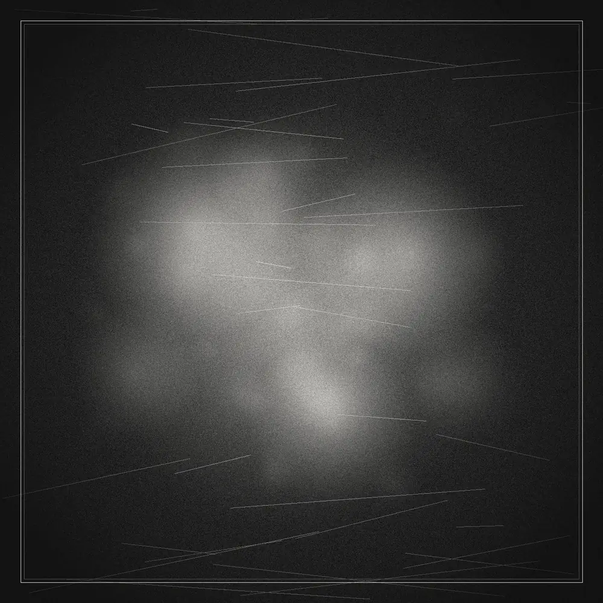
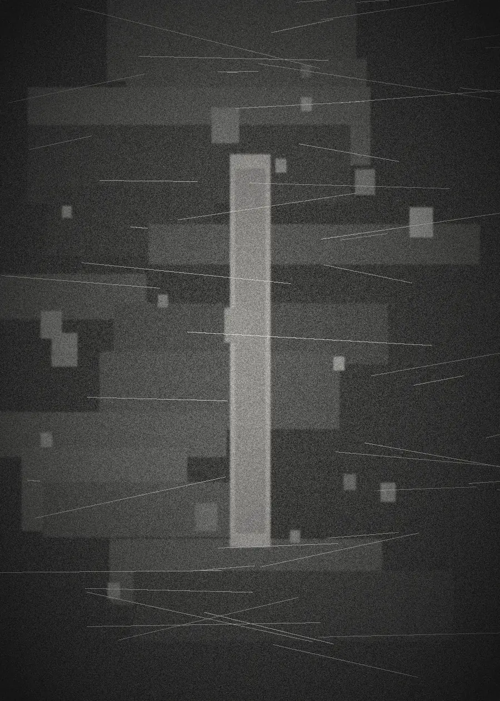

Bloom’s Village
Three tracks from Manchester artist Will Holton, working as Bloom’s Village. Titles are still taking shape with the music. The first Sharp Records pressing.
- 01 UntitledTBA
- 02 UntitledTBA
- 03 UntitledTBA
Manchester Independent electronic music Est. 2026
Sharp Records
01 / Manifesto
SHARP RECORDS is an independent electronic music label built around exploration and expression.
Rooted in the heritage of British electronic music, we look towards the future. From jungle and garage to techno, house, breaks and experimental sounds, we exist beyond the limitations of genre.
We champion independent artists, emerging talent and unconventional ideas.
We believe in creative freedom over commercial expectation. In originality over imitation. In the unexpected over the predictable.
More than a record label, SHARP is a platform for music, art and culture. A space for collaboration, discovery and creative experimentation.
We exist to challenge conventions, connect communities and give new sounds a platform.
No fixed genre. No creative limits. No compromise.
This is Sharp Records.
02 / Catalogue

Three tracks from Manchester artist Will Holton, working as Bloom’s Village. Titles are still taking shape with the music. The first Sharp Records pressing.
03 / Roster

The recording name of Will Holton, a Manchester-based artist working across experimental electronic music. His debut for the label is a three-track EP, catalogue SR001.
04 / Live
05 / Transmissions
Mixes, sessions and conversations from around the label. First broadcast forthcoming.
06 / Editorial

A new imprint rooted in British electronic music, looking toward jungle, garage, techno, house, breaks and the experimental edge.
Will Holton’s project lands as catalogue number SR001 — a three-track experimental electronic EP.
07 / Contact
Bookings, demos, press, licensing and collaborations. Send a message and we will come back to you.